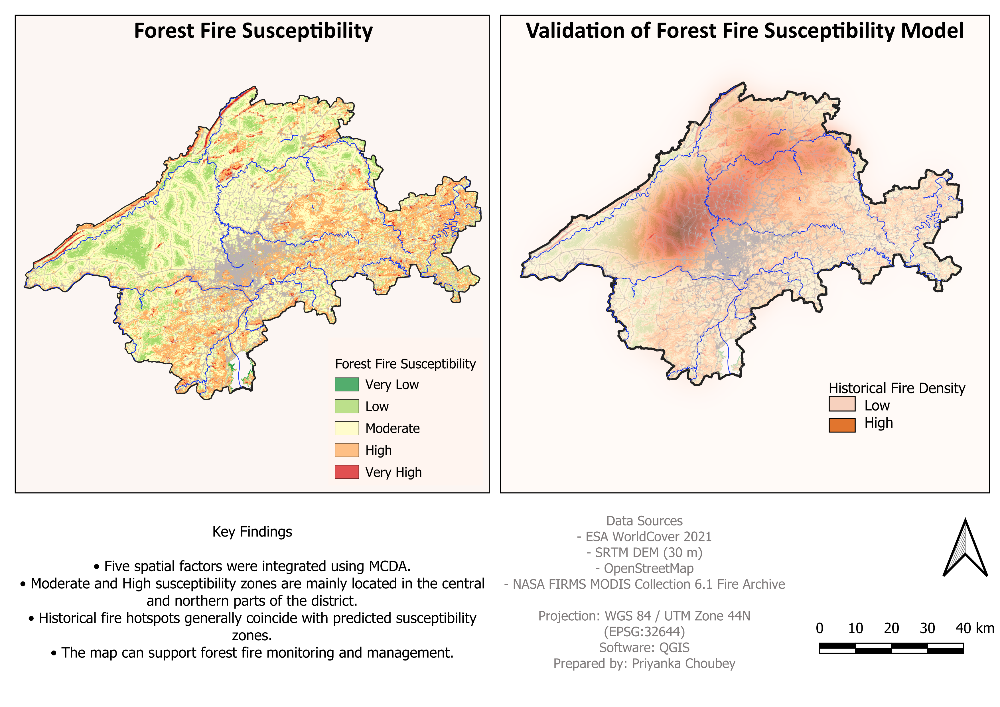

Hi, I'm Pri
GIS Analyst | Environmental Studies | Remote Sensing
I am a Forestry graduate and Environmental Studies student
specializing in GIS, spatial analysis, remote sensing,
and environmental data applications.
My work focuses on applying geospatial technologies for
environmental assessment, disaster risk mapping,
and natural resource management.
Skills
- QGIS
- Remote Sensing
- Raster Analysis
- Spatial Analysis
- PostgreSQL / PostGIS
- SQL
- Python (Learning)
- Environmental Data Analysis
Education
Bachelor of Science (B.Sc.) Forestry
Master of Arts (M.A.) Environmental Studies
Projects
Forest Fire Risk Analysis

Developed a forest fire susceptibility map using
GIS-based Multi-Criteria Decision Analysis (MCDA).
Data Used:
DEM, DL_FIRE_SV-C2 fire data, WorldCover LULC,
CHIRPS rainfall, OSM roads, rivers and settlements.
Methods:
Raster analysis, reclassification,
weighted overlay analysis, and spatial analysis
using QGIS.
Result:
Generated forest fire susceptibility zones
classified into Low, Medium, and High risk areas.
View Project on GitHub
Flood Susceptibility Analysis

Developed a flood susceptibility map for Jabalpur District
using GIS-based Multi-Criteria Decision Analysis (MCDA).
Data Used:
Digital Elevation Model (DEM), Land Use/Land Cover (LULC),
rainfall data, drainage network, and boundary data.
Methods:
Data preprocessing, clipping, raster reclassification,
Raster Calculator, and Weighted Overlay Analysis.
Result:
Generated flood susceptibility zones ranging from
Very Low to Very High risk categories.
View Project on GitHub
Watershed Delineation and Hydrological Analysis

Developed a DEM-based watershed delineation workflow
to analyse terrain characteristics and drainage patterns.
Data Used:
Digital Elevation Model (DEM), watershed boundary,
and elevation-derived hydrological parameters.
Methods:
DEM preprocessing, sink filling,
flow direction, flow accumulation,
stream extraction, and watershed delineation.
Tools:
QGIS, Raster Analysis, Hydrological Modelling.
Result:
Generated watershed and drainage maps useful for
water resource management and environmental planning.
View Project on GitHub
Contact
GitHub:
github.com/pri66